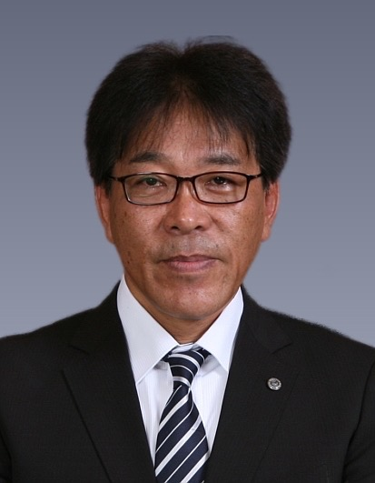

TOP ＞＞ 学校長挨拶
グローバル化が社会に多様性をもたらし、急速な情報化や技術革新が人間生活を質的にも変化させつつあります。これからの時代を生きる子供たちが、社会や世界に向き合い関わり合い、自らの人生を切り拓いていく資質・能力を身につけていくことが求められており、そのために学校はいかにあるべきかが強く問われています。
本校は、創立110年の伝統と最新設備を誇る県内を代表する工業高校であり、これまで約４万人の日本の工業界をリードする人材を育て、地域産業の発展に大きく貢献してきました。今後は、100周年事業におけるメインテーマ「未来につなげ和工の伝統」のとおりに、これまで培ってきた工業教育の高い専門性と、部活動をはじめとした生徒の自主活動を継承・発展させるとともに、時代の流れを読み、変革を恐れることなく、社会が求める人間中心の「ものづくり」ができる専門的職業人(スペシャリスト)を育てていくことが、本校に与えられた使命であると捉えています。
そのためには、生徒自身が、人に愛される「ものづくり」の担い手となるための素地を本校でしっかりと磨きあげることが必要であり、「自らの考えを表現する活動にしっかり取り組む」、「仲間をリスペクト(賞賛)できる態度を身につける」、「挨拶や身だしなみを大切にする」ことを教育の基盤に置くことが重要であると考えています。
私たち教職員は、チームワークを大切にして、生徒一人一人が持つ資質・能力をしっかりと伸ばすことをめざして、「質実剛健」の校訓のとおりに、素直に誠実にたくましく生きる力の育成に邁進してまいります。 生徒も教職員もともに誇り(プライド)をもち続けられる学校であるために、質の高い教育の提供に挑戦し続けていく和歌山工業高校に、ご支援とご協力をよろしくお願いいたします。
和歌山県立 和歌山工業高等学校
校 長 藤 田 勝 範
和歌山工業高等学校のサイトへようこそ
グローバル化が社会に多様性をもたらし、急速な情報化や技術革新が人間生活を質的にも変化させつつあります。これからの時代を生きる子供たちが、社会や世界に向き合い関わり合い、自らの人生を切り拓いていく資質・能力を身につけていくことが求められており、そのために学校はいかにあるべきかが強く問われています。
本校は、創立110年の伝統と最新設備を誇る県内を代表する工業高校であり、これまで約４万人の日本の工業界をリードする人材を育て、地域産業の発展に大きく貢献してきました。今後は、100周年事業におけるメインテーマ「未来につなげ和工の伝統」のとおりに、これまで培ってきた工業教育の高い専門性と、部活動をはじめとした生徒の自主活動を継承・発展させるとともに、時代の流れを読み、変革を恐れることなく、社会が求める人間中心の「ものづくり」ができる専門的職業人(スペシャリスト)を育てていくことが、本校に与えられた使命であると捉えています。
そのためには、生徒自身が、人に愛される「ものづくり」の担い手となるための素地を本校でしっかりと磨きあげることが必要であり、「自らの考えを表現する活動にしっかり取り組む」、「仲間をリスペクト(賞賛)できる態度を身につける」、「挨拶や身だしなみを大切にする」ことを教育の基盤に置くことが重要であると考えています。
私たち教職員は、チームワークを大切にして、生徒一人一人が持つ資質・能力をしっかりと伸ばすことをめざして、「質実剛健」の校訓のとおりに、素直に誠実にたくましく生きる力の育成に邁進してまいります。 生徒も教職員もともに誇り(プライド)をもち続けられる学校であるために、質の高い教育の提供に挑戦し続けていく和歌山工業高校に、ご支援とご協力をよろしくお願いいたします。
和歌山県立 和歌山工業高等学校
校 長 藤 田 勝 範